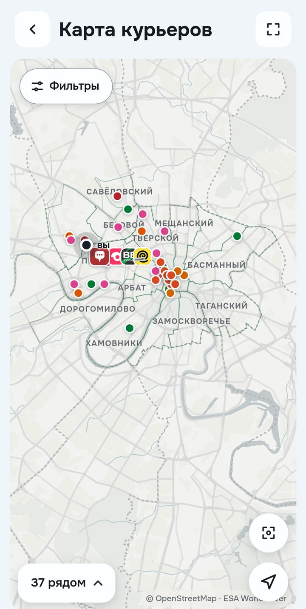

Вся работа
Один Разнос
Смена, слоты и деньги из разных сервисов доставки в одном приложении
Посмотреть возможностиНастоящие экраны приложенияДемонстрационные данные Москвы
 Ваш день в одном месте
Ваш день в одном местеСначала план
Потом смена
Слоты разных сервисов собираются в один день. Видно, куда записаны, что идёт следующим и успеваете ли доехать
- Расписание и цель на неделю
- Свободные слоты и заявки
- Предупреждения о пересечениях

Меньше переключений
Больше ясности
Текущая работа, последние заказы и ожидаемые выплаты собраны на экране Сегодня
- Активный заказ и маршрут
- Сервисы и свежесть их данных
- Сообщения курьеров поблизости
Не просто начислено
А что осталось
Доход, расходы и время рядом. Разберите свой день, неделю или месяц и увидьте вклад каждого сервиса
- Начисления, чаевые и удержания
- Расходы и результат после них
- Сравнение периодов, сервисов и районов

Выбирайте работу
с открытыми глазами
Сравните сервисы, районы и время по статистике Разноса, а условия проверьте в карточках и отзывах курьеров




Здесь есть
свои
Что происходит на точках, где задержки и что изменилось в сервисах. Обсуждайте работу с другими курьерами
- Лента сообщений и обсуждения
- Отзывы и вопросы о сервисах
- Реферальные предложения и сделки
Разные сервисы
Один профиль
Подключённые аккаунты, их показатели, история работы и настройки собраны вместе
- История заказов и расходов
- Публичный профиль и чаевые
- Ссылка с выбранными данными работодателю